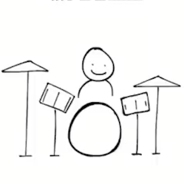
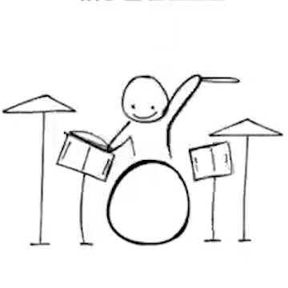
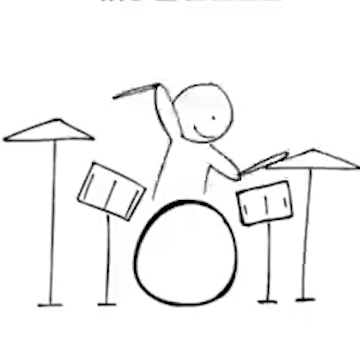

LITTLE BREAKCORE
BUDDY
A drum-break onset analyzer and a little animated drummer that watches your amen breaks (or anything else you throw at it) and reacts in real time — as a desktop app, and as a VST3 plugin that lives right on your FL Studio channel.
Demo
desktop app — onset detection + editing
- look at me haphazardly (rehirable)
vocals removed
exported animated video (MP4)
- db_amen_2019 (drexgod)
vocals removed
VST3 plugin — live in FL Studio
- impacto (enjambre)
- Buddy Holly (Weezer)
- Bad Piggies Theme (Ilmari Hakkola)
- look at me haphazardly (rehirable)
- db_amen_2019 (drexgod)
vocals removed, drums chopped, guitars hardcore'd
Installation
DESKTOP APP (WINDOWS EXE, NO PYTHON NEEDED)
- Download
AmenAnalyzer.exefrom the Releases page (or build it yourself, see below). - Put it in a folder next to the WAV file(s) you want to analyze.
- Open a terminal in that folder and run it, pointing at your audio:
AmenAnalyzer.exe "drums_only.wav" "full_song.wav"(the second file is optional — omit it to use one file for everything)
DESKTOP APP (FROM SOURCE)
- Clone the repo and install dependencies:
git clone https://github.com/JadonKJones/little-breakcore-buddy.git
cd little-breakcore-buddy/amen_analyzer
pip install -r requirements.txt - Run it directly with Python:
python main.py "drums_only.wav" "full_song.wav"
- (Optional) Build your own standalone exe with PyInstaller:
pyinstaller --noconfirm --name AmenAnalyzer --add-data "../animation frames;animation frames" main.py
VST3 PLUGIN (DRUMMER) — FL STUDIO
- Download
Drummer.vst3from the Releases page (or build it yourself, see below). - Close FL Studio if it's open, then copy the
Drummer.vst3folder into your system VST3 folder (from an elevated/Admin PowerShell):Copy-Item -Recurse -Force "Drummer.vst3" "C:\Program Files\Common Files\VST3\" - Open FL Studio → Options → Manage Plugins → Find Plugins to rescan, then drop "Drummer" onto a mixer channel like you would Fruity Dance, and hit play.
VST3 PLUGIN (BUILD FROM SOURCE)
- Prerequisites: Visual Studio 2022 (with the "Desktop development with C++" workload) and CMake installed.
- Clone the repo and configure the build (this also fetches JUCE automatically — first run takes a few minutes):
cd little-breakcore-buddy/amen_plugin
cmake -B build -G "Visual Studio 17 2022" -A x64 - Build it:
cmake --build build --config Release
- The built plugin lands at
build\AmenDrummer_artefacts\Release\VST3\Drummer.vst3— copy it into your VST3 folder as in step 2 above.
The Analyzer (Desktop App)
| What it is | A Python/Pygame desktop tool that loads a WAV, splits it into kick/snare/cymbal onset bands, and lets you scrub, zoom, and manually correct the detection before exporting. |
| Stack | Python, librosa, numpy, scipy, pygame-ce |
| Packaged as | Standalone .exe via PyInstaller — no Python install required to run it |
WAVEFORM + PLAYBACK
Zoomable, scrollable waveform view with a real playhead, so a 2-minute break isn't just an unreadable smear at full zoom-out.
3-BAND ONSET DETECTION
Kick, snare, and cymbal are each detected in their own frequency band instead of one shared envelope — otherwise cymbals drown out everything else.
CLICK-TO-CORRECT EDITING
Click a marker to select it, K/S/C to relabel, Delete to remove, click empty space to add one. Full undo/redo history.
EXPORT EVERYTHING
Save/load the analysis as JSON, export as CSV, or render the whole animated drummer reacting to the track — synced with audio — as an MP4 via ffmpeg.
The Plugin (Drummer VST3)
| What it is | The same idea, but live — drop it on a channel like you would Fruity Dance, hit play, and the drummer reacts to the audio passing through in real time. |
| Stack | C++, JUCE 7 (VST3), CMake |
| Status | Working proof of conceptPoC |
| Known issues | Drum rolls (rapid repeated hits, especially kicks) don't always animate correctly yet — actively being worked on. |
REAL-TIME 3-BAND ONSETS
Same kick/low, snare/mid, cymbal/high split as the analyzer, running as independent envelope-follower detectors per audio block instead of an offline pass.
LIVE SPRITE ANIMATION
The same drummer state machine as the desktop app, ported to C++ — idle timeout, snare cycling, crash pairs chosen by whatever came before, kick as a quick overlay instead of its own pose.
SELF-CONTAINED
All animation frames are embedded directly into the plugin binary at build time — no external files to ship alongside it.
How It Works
Both versions share the same core idea, split into three layers:
- Detection — the incoming audio is filtered into three frequency bands (kick ~20-150Hz, snare ~150-4000Hz, cymbal 4000Hz+), and each band gets its own onset detector so a loud hi-hat doesn't drown out a quiet kick.
- State machine — each detected hit feeds a small state machine that tracks the current pose, how long it's been idle, and what came before it (so repeats cycle through frames, and a kick briefly overlays whatever's already playing instead of interrupting it).
- Render — the desktop app draws this to a Pygame window (or renders it frame-by-frame into an MP4 with ffmpeg); the plugin draws it straight into its JUCE editor, live, synced to whatever's coming through the channel.
Tech Stack
DESKTOP APP
VST3 PLUGIN
SIGNAL PROCESSING
Controls in the desktop app: SPACE play/pause · KSC relabel · CTRL+Z undo · CTRL+V export video